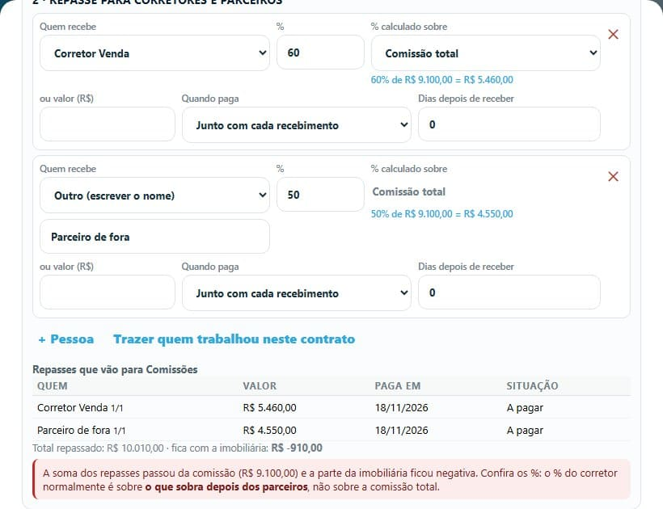
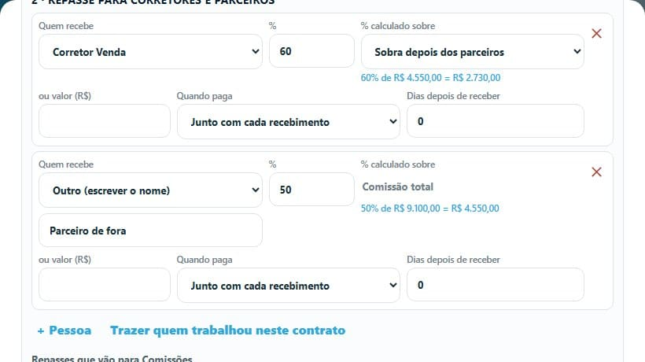
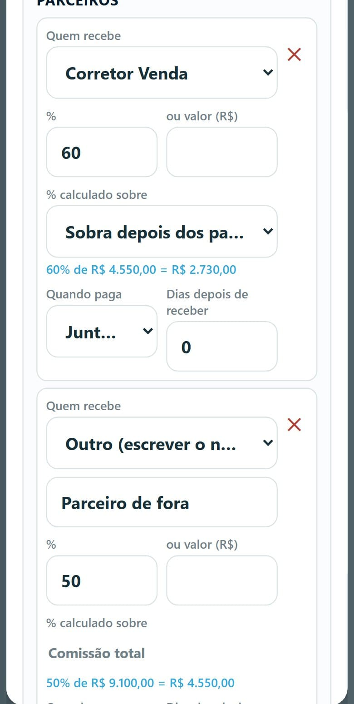
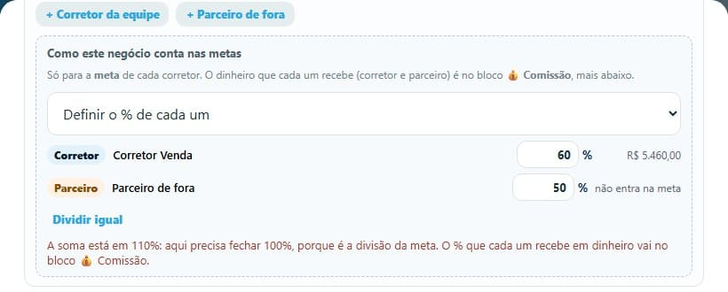
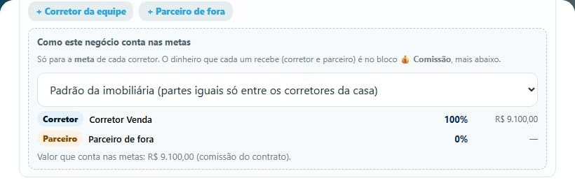

SKL Gestão Imobiliária · Financeiro → Contratos → 💰 Comissão e “Como este negócio conta nas metas” · Imóveis → fotos
Exemplo que vocês enviaram: comissão de R$ 9.100,00. O parceiro de fora fica com 50% do total, e o corretor fica com 60% do que sobra; o resto é da imobiliária.
No bloco 💰 Comissão, o % de cada pessoa era calculado sobre a comissão inteira. Os 60% do corretor viravam 60% de R$ 9.100,00:
| Parceiro: 50% de R$ 9.100,00 | R$ 4.550,00 |
| Corretor: 60% de R$ 9.100,00 | R$ 5.460,00 |
| Fica com a imobiliária | − R$ 910,00 |
Por isso a parte da imobiliária ficava negativa e vocês precisavam fazer a conta na calculadora e digitar o valor em reais.

Cada linha de repasse tem o campo “% calculado sobre”. Para corretor da equipe, o padrão é “Sobra depois dos parceiros”:
| Comissão total | R$ 9.100,00 |
| Parceiro: 50% de R$ 9.100,00 | R$ 4.550,00 |
| Sobra depois do parceiro | R$ 4.550,00 |
| Corretor: 60% de R$ 4.550,00 | R$ 2.730,00 |
| Fica com a imobiliária (os outros 40%) | R$ 1.820,00 |
Embaixo de cada %, o sistema mostra a conta pronta (ex.: “60% de R$ 4.550,00 = R$ 2.730,00”). Corretor com 70%: é só escrever 70 (70% de R$ 4.550,00 = R$ 3.185,00).


O quadro “Como este negócio conta nas metas” era preenchido com os % do dinheiro (corretor 60% + parceiro 50% = 110%). O sistema não deixa salvar, porque ali a soma tem que fechar 100%.

💰 Comissão = quanto cada pessoa recebe em dinheiro. Como este negócio conta nas metas = quanto do contrato entra na meta (VGC) de cada corretor no Painel e na tela de Metas. Os dois números podem ser diferentes.
Na maioria dos contratos, deixe em “Padrão da imobiliária”: o parceiro de fora não entra em meta de ninguém e o corretor conta a comissão do contrato.
Se a imobiliária quer que a meta do corretor conte só a parte que ficou com a casa (no exemplo, R$ 4.550,00 em vez de R$ 9.100,00), escolha “Partes iguais entre todos (o parceiro de fora conta como um)”. Para deixar isso como regra para todos os contratos: Comissões → Editar metas → “Contrato com mais de um envolvido”.
Use “Definir o % de cada um” só quando a divisão da meta for diferente; aí a soma precisa fechar 100%.

Exemplo enviado: um corretor tinha R$ 2.500,00 no trimestre e passou a R$ 2.850,00. Desde 16/11 o contrato é dividido entre quem está em “Trabalharam junto neste negócio”:
| Locação dele (R$ 2.500,00), com mais um corretor junto: metade | R$ 1.250,00 |
| Locação de outro corretor (R$ 3.200,00), em que ele está como participante: metade | R$ 1.600,00 |
| Total na meta | R$ 2.850,00 |
Antes, cada contrato contava 100% só para quem fechou. Se alguém não trabalhou no contrato, tire o nome dele de “Trabalharam junto” ou ajuste o quadro das metas.
As fotos não eram apagadas: continuavam guardadas. Em imóvel com muitas fotos, o aviso automático que atualiza a tela de quem está com o sistema aberto chegava, na aprovação, sem a lista de fotos, e a tela mostrava o imóvel vazio. Por isso acontecia “às vezes”: só em imóvel com muitas fotos ou descrição longa.
O risco era o passo seguinte: quem via o imóvel sem fotos e subia as fotos de novo trocava a lista original pela nova. Foi o que aconteceu num imóvel aprovado em 11/11: as 16 fotos do corretor deram lugar a 13 enviadas de novo.
Corrigido na versão 0.21.1: a tela agora confere o imóvel completo no sistema, e salvar sem mexer nas fotos nunca altera a lista de fotos.
Contratos já salvos antes da versão 0.21.1 continuam com os valores gravados. Para refazer a conta de um repasse ainda não pago, abra o contrato, troque “% calculado sobre” para Sobra depois dos parceiros e salve.
Repasse já aprovado ou pago não muda pelo contrato: ajuste na tela Comissões.
Se o parceiro receber valor fixo (R$) em vez de %, preencha “ou valor (R$)” no parceiro; a sobra do corretor já desconta esse valor.
| Elaborado por | Versão | Data | Alteração |
|---|---|---|---|
| SKL Geo Soluções | 1.0 | 18/11/2026 | Emissão inicial. |